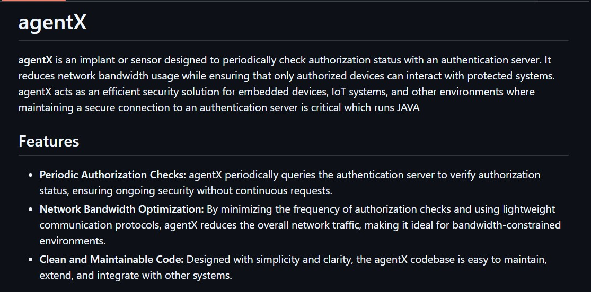
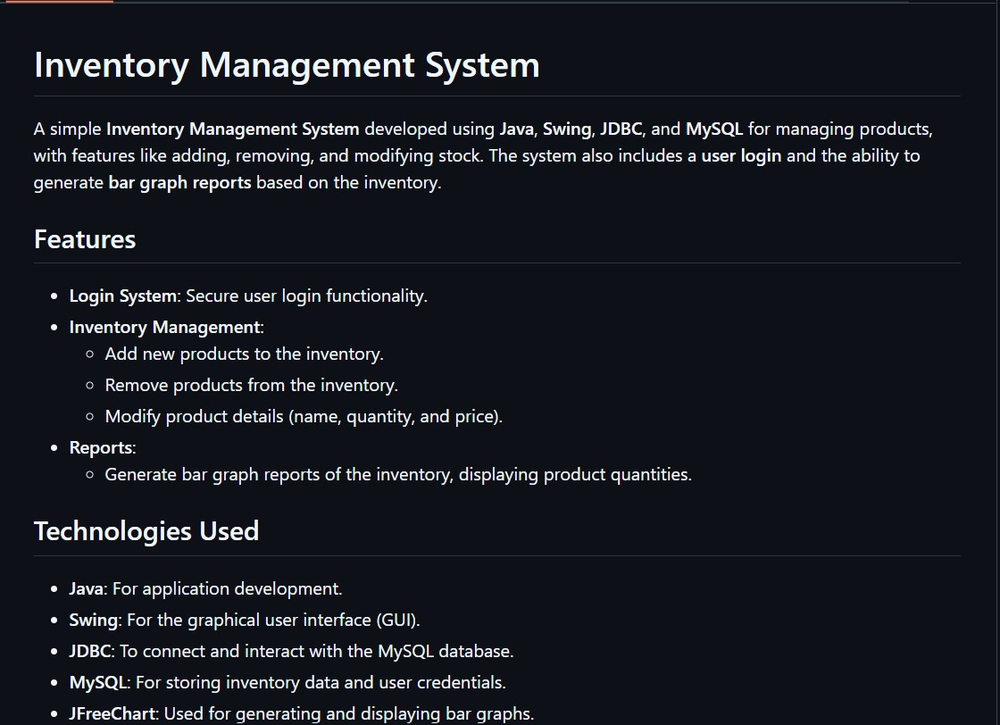

Here some of the projects I Recently did.

CRUD-API
MariaDB + FastAPI connectivity CRUD. with OPENAPI frontend
Technology used

A simple and efficient task management web app that allows users to add, delete there task as there wish.
Technology used

inventory Management
A simple Inventory Management System developed using Java, Swing, JDBC, and MySQL for managing products, with features like adding, removing, and modifying stock. The system also includes a user login and the ability to generate bar graph reports based on the inventory.